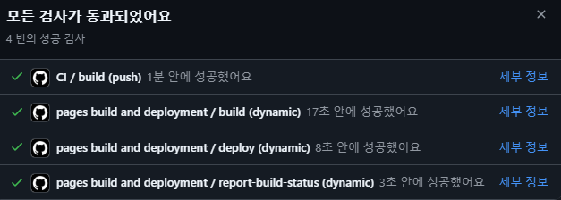
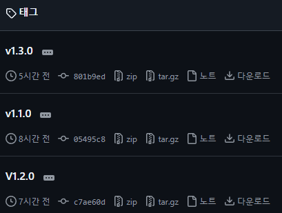
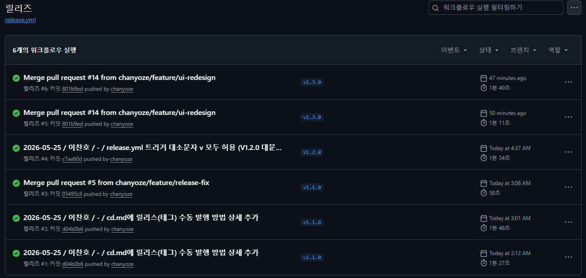
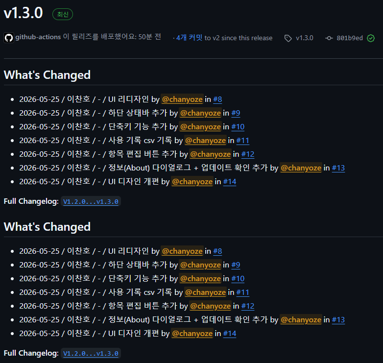
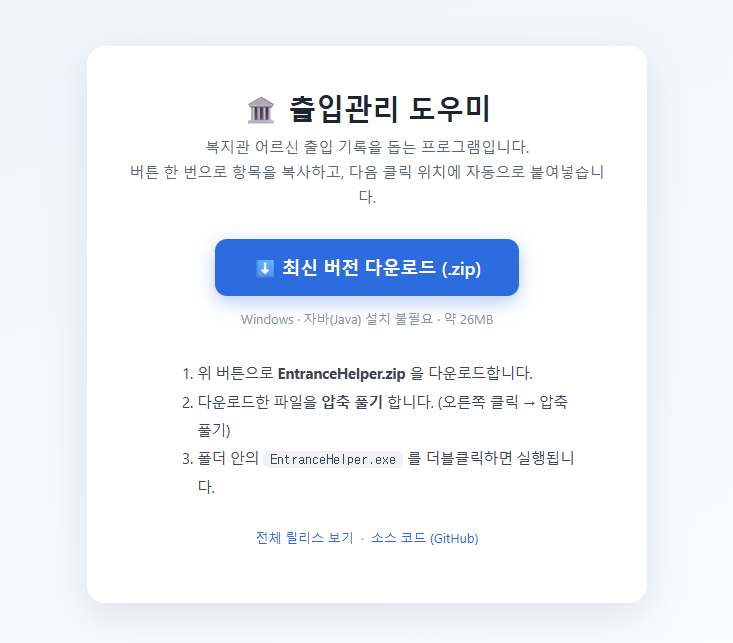
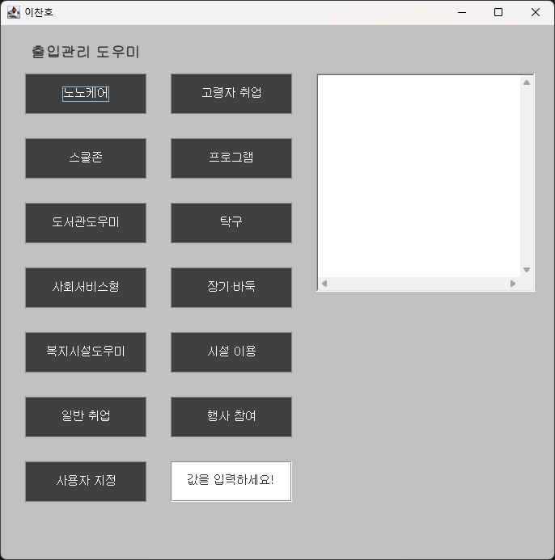
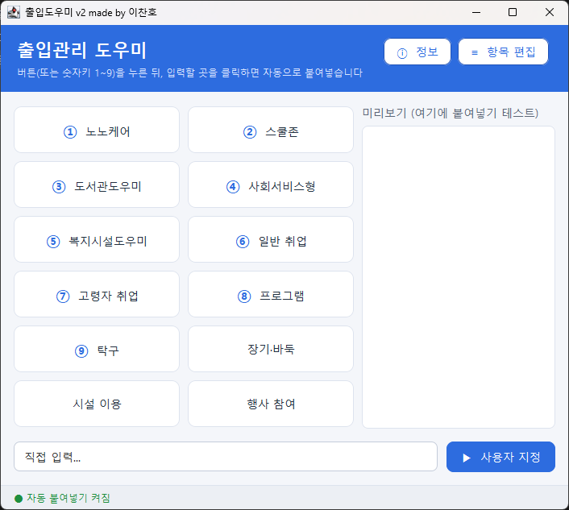

노인복지관 출입도우미 V2
과거 Toy Project였던 Java Swing 데스크톱 앱을 리팩토링하고,
CI/CD 인프라를 구축해 빌드·테스트·배포를 자동화하기
🌿 → 🐘 → 🧪 → 🤖 → 📦 → 🌐
이찬호 · 2026.05.18 ~ 2026.05.26
⛔ AS-IS: 러너가 빌드조차 못 하는 상태 → TO-BE: 코드 리팩토링 부터 다시 작업
💡전용 서버 구축 X — 저장소에 통합된 무료 인프라로 비용·관리 없이 push·tag만 사용해 자동화
main() 하나에 약 230줄UI·이벤트·외부 실행이 전부 한 메서드에p.waitFor() 때문에 외부 exe가 닫힐 때까지 창이 안 뜸Button.java · 컴파일 안 되는 Removed.java · 죽은 주석Main.java — 모든 책임이 한 파일에 (약 230줄)// 버튼 13개 복사 로직을 복붙 13번 btn[0].addActionListener(e -> { StringSelection d = new StringSelection(prgname[0]); clipboard.setContents(d, d); }); btn[1].addActionListener(e -> { /* prgname[1] … 동일 */ }); // ... 11번 더 ... // 외부 exe 경로 하드코딩 + 블로킹 p = rt.exec("C:\\…\\ATTEND_RF.exe"); p.waitFor();
[Before] src/main/ └ Main.java ← 230줄, 모든 책임 [After] src/main/java/app/ ├ App.java 진입점 ├ MainFrame.java UI 구성 ├ UiConstants.java 상수 ├ ClipboardService 복사 └ AppConfig.java 설정
AutoPasteService.java — 전역 후킹 + 지연 붙여넣기App.java — 서비스 연결// 버튼 클릭 → 복사 후 '무장' // 사용자가 입력칸을 클릭하면 실행 void schedulePaste() { Thread.sleep(200); // 잠깐 대기 robot.keyPress(VK_CONTROL); robot.keyPress(VK_V); // OS 레벨 Ctrl+V robot.keyRelease(VK_V); robot.keyRelease(VK_CONTROL); }
JDK 경로 하드코딩 제거 — 버전(25)만 선언, 자동 탐색
빌드 도구 버전까지 고정 — 어디서나 동일 재현
lib/*.jar 직접 커밋 → 좌표로 선언
plugins { id 'application' }
java {
toolchain { // 경로 하드코딩 X
languageVersion = of(25) // 버전만 선언
}
}
repositories { mavenCentral() } // lib/*.jar 대체
dependencies {
implementation 'com…:jnativehook:2.2.2'
}
✅ OS 무관하게 ./gradlew build 한 줄 — 러너가 빌드할 수 있는 조건
parsePrograms()🎯 핵심: 테스트 수가 아니라 '테스트 가능하게 분리한 설계'
build.gradle — JUnit 5 도입 · 테스트 실행 환경AppConfig · UsageLog · UpdateChecker — 테스트할 순수 로직 (운영 코드)AppConfigTest · UsageLogTest · UpdateCheckerTest — 실제 단위 테스트// 화면과 무관한 '순수 함수'로 추출 static List<String> parsePrograms(String csv) { return Arrays.asList(csv.split("\\s*,\\s*")); } // 파일·화면 없이 그냥 검증 @Test void splitsByComma() { assertEquals(List.of("a", "b"), AppConfig.parsePrograms("a, b")); }
gradlew build로 컴파일 + 테스트 수행.github/workflows/ci.yml — push·PR마다 ubuntu 러너에서 gradlew build 자동 실행
📦 CD = 사용자가 받을 결과물(exe)을 자동으로 만들어 배포 — 워크플로를 짜기 전에 두 가지를 먼저 정했다
매 push · 수동 · 태그 중 → 버전 태그 push (v*)
릴리스 ↔ 버전이 1:1, 업계 표준
단독 exe · zip · 설치본 중 → JRE 내장 app-image zip
자바 없는 PC도 풀고 더블클릭



docs/index.html — 다운로드 랜딩 페이지 (GitHub Pages 호스팅)release.yml — 버전 없는 고정 이름 zip으로 /latest 링크 유지
증상 워크플로는 성공인데 릴리스된 zip이 460byte
원인 압축 단계가 파일명 재조립 중 인코딩 깨짐
→ 에러 없이 빈 zip 생성
해결 폴더 직접 탐지 · tar · 크기 가드 · ASCII 이름
증상 V1.2.0 push했는데 릴리스 안 돎
원인 트리거 v*가 대소문자 구분
해결 ['v*','V*']로 확장 + 태그 force 재발행
증상 ubuntu 러너에서 ./gradlew 실행 거부
원인 git에 실행권한(+x) 비트 없음
해결 git update-index --chmod=+x gradlew
💡 교훈: '성공 로그 ≠ 정상 결과' — 에러 없이 조용히 실패할 수 있으니 산출물 검증 가드를 두자 (CI/CD는 셸·인코딩·OS·대소문자에 민감)
증상 숫자키 단축키가 처음엔 되다가, 미리보기를 한 번 클릭하면 안 먹힘
원인 입력 중엔 숫자키를 양보하게 했는데 그 대상에 미리보기 영역까지 포함
→ 미리보기에 포커스가 가면 단축키가 막힘
해결 양보 대상을 '사용자 지정 입력칸'으로만 한정
증상 편집 버튼의 ✎가 네모로 표시
원인 맑은 고딕에 글리프 없음
해결 canDisplay로 표시 가능한 글자만 부착(일반화)
💡 교훈: 환경(포커스·폰트) 의존 버그는 재현 조건을 좁혀 잡고, 일반화된 가드로 재발 차단

images/before.png
images/after.png🐳 다음 단계 — Docker + GitHub Actions로 빌드 환경까지 컨테이너화
CI/CD 토이 프로젝트 · 이찬호 · 2026.05